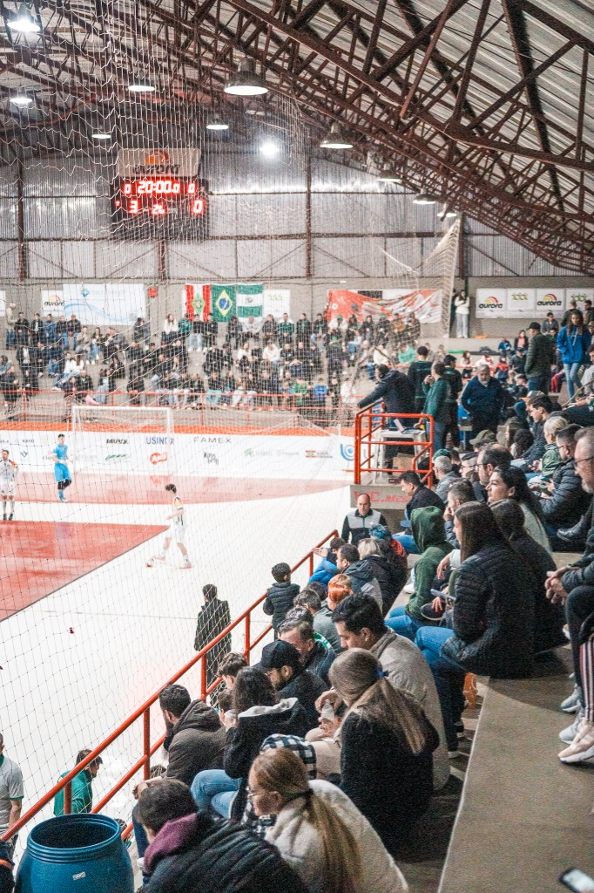

A equipe Prefeitura de Chapecó/Chapecoense/Unochapecó tem mais um compromisso importante nesta semana. O Verdão das Quadras recebe na quarta-feira (27/5), às 19h30, a Pinhalense pela segunda partida na Copa Santa Catarina de Futsal. Os ingressos já estão à venda.
A bola irá rolar no Ginásio Plínio Arlindo De Nes (SER Aurora). A torcida pode adquirir o ingresso de forma antecipada nos seguintes locais: Loja Oficial da Chape Futsal (anexo à Classic Uniformes, na rua Paulo Marques, entre as avenidas Fernando Machado e Porto Alegre), Loja iXap Sports (na avenida Getúlio Vargas, entre as ruas Paulo Marques e Vitório Cella) e no site ingressojogo.com.br. Também é possível comprar na hora no ginásio.
Bilhete solidário
Os bilhetes custam R$ 20 (inteiro) e R$ 10 (meia, para pessoas com direito garantido por lei), mas há ainda opção do ticket solidário. O torcedor retira o ingresso a R$ 10 em qualquer ponto de venda e leva um agasalho ou cobertor ao ginásio. Os donativos serão repassados para a Fundação Aury Luiz Bodanese. O sócio com a carteirinha, que não paga a entrada, está convidado a participar da ação e ajudar a aquecer famílias carentes no período mais frio do ano.
Começou bem
O time do técnico Leonardo Schroeder estreou com três pontos na Copa SC. No último dia 16, a Chapecoense ganhou do Maravilha por 5 a 4, fora de casa, de virada. O torneio reúne 14 clubes, divididos em dois grupos. Após turno único, os quatro melhores se classificam ao mata-mata. O campeão garante vaga à Copa do Brasil de 2027.

Crédito das fotos: @rogersilva_fotografia/@achapefutsal